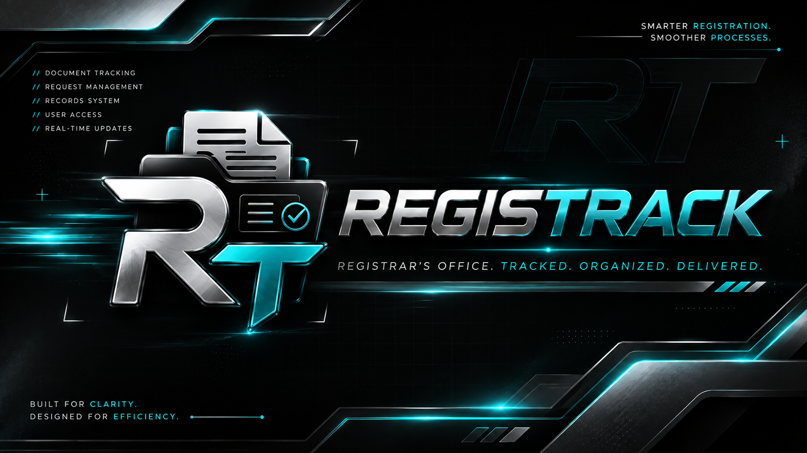

Shopzilla
A project application focused on delivering a smooth, modern shopping experience. Designed with clean flows, intuitive navigation, and a user-first mindset to make digital commerce feel effortless.
Explore Project →A glimpse into the systems and experiences I've built — from concept to working product.
A project application focused on delivering a smooth, modern shopping experience. Designed with clean flows, intuitive navigation, and a user-first mindset to make digital commerce feel effortless.
Explore Project →
A web-based registration and tracking system built for clarity and efficiency. Handles data flow, user management, and real-time status updates with a clean, understandable interface.
Explore Project →More experiments are brewing — AI-assisted tools, interactive interfaces, and systems that push beyond the ordinary. The next chapter is already being written.
Collab With Me →